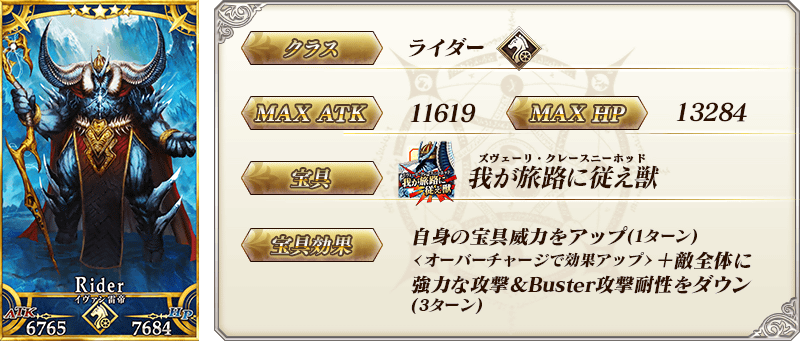
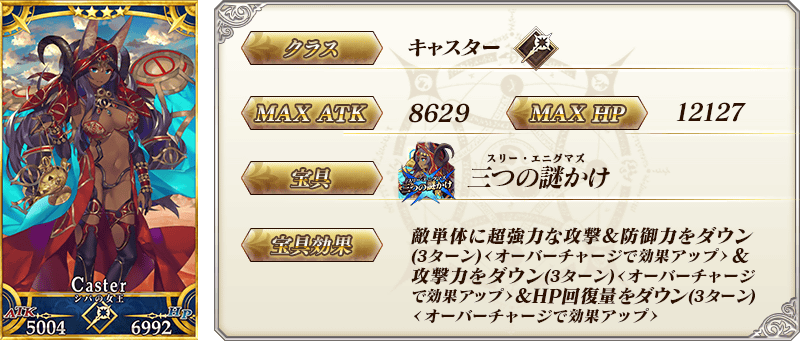
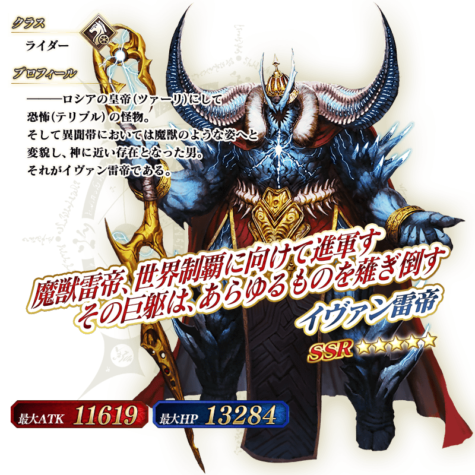

◆「FGO冬祭 2018-2019 ～移動大馬戲團！～舉辦記念Pick Up2召喚」期間◆
期間:2019年1月18日(五) 17:00～2月1日(五) 11:59
為了記念於全國各地進行「FGO冬祭 2018-2019 ～移動大馬戲團！～」的舉辦，舉辦期期間限定「FGO冬祭 2018-2019 ～移動大馬戲團！～舉辦記念Pick Up2召喚」！
本次從在「FGO冬祭 2018-2019 ～移動大馬戲團！～」主視覺圖繪製的Servant之中，「★5(SSR)伊凡雷帝」以期間限定登場！
另外「★4(SR)米德拉什的Caster(示巴女王)」Pick Up！
詳情請在聖晶石召喚畫面左下的召喚詳細確認。
◆有關Servant的注意◆
※伊凡雷帝在Pick Up期間結束後不會追加到故事召喚。
※米德拉什的Caster(示巴女王)在Pick Up期間結束後仍會在故事召喚被抽出。
※Pick Up期間中，米德拉什的Caster(示巴女王)就算通過章節前也能入手。
※關於隱藏真名的Servant，會透過主線關卡的進行度讓Servant及一部份寶具的名稱變化
◆有關Servant真名的注意◆
在2018年12月31日(一) 23:00以後新配信的主線故事及期間限定活動，會顯示隱藏真名的對象Servant真名。
※已經配信的主線故事、復刻活動中不在此限。
Pick Up期間中，期間限定Servant、Pick Up Servant的出現機率提升！
10次召喚中確定1張★4(SR)以上和確定1位★3(R)以上的Servant！
※確定★4(SR)以上包含Servant和概念禮裝。

※上述「★5(SSR)伊凡雷帝」的卡面為靈基再臨第2階段。

※上述「★4(SR)米德拉什的Caster(示巴女王)」的卡面為靈基再臨第2階段。

※上述「★5(SSR)伊凡雷帝」的立繪為靈基再臨第2階段。
介紹伊凡雷帝、米德拉什的Caster(示巴的女王)的寶具演出！
「Fate/Grand Order」官方網站內的公告中，公開了「★5(SSR)伊凡雷帝」「★4(SR)米德拉什的Caster(示巴女王)」的寶具演出。敬請確認。